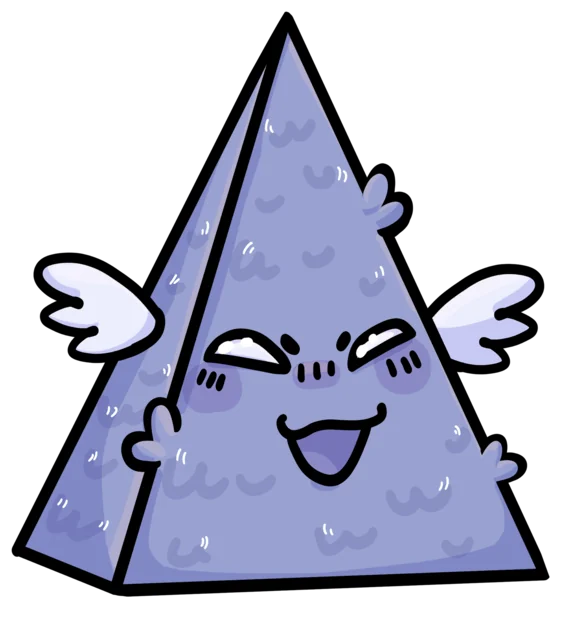

Ball is God?! Мұнараны бұрыңыз. Соққыға айналыңыз.
Көлденең сүйреу мұнараны құлап келе жатқан Espa айналасында бұратын хардкор тік түсу аркадасы. Қауіпсіз қонуларды өткізіп жіберіп, комбо соққыны зарядтаңыз да, қорғансыз тиген бір соққы ойынды аяқтайтын мифтік әлемді жарып өтіңіз.
Белсенді өндіріс: он локация, босстар, тармақталған диалогтар және ойын ережелерін өзгертетін карма жолдары.
Айналдырумұнараны Espa айналасында сүйреңіз
Тәуекелүш қауіпсіз қонуды өткізіп жіберіңіз
Соққыплатформадан өту
Ағымдағы құрастыру ішінде
Карма тек диалогты ғана өзгертпейді.
Жарық, бейтарап және қараңғы карма жолдары қалқандардың мінез-құлқын, ескерту сигналдарын, жаулардың агрессиясын және босс фазаларын өзгертеді, сондықтан сюжет сіздің ойнау тәсіліңізге әсер етеді.
Құрастыру күйі Белсенді өндірісБарлық он диалог әлемі
Барлық он әлемнің диалог фондары, Ena-дан Deka-ға дейінгі түсу ретімен.


Ағымдағы өндірістік пайдаланушы интерфейсі
Ағымдағы құрастырудағы деңгей таңдау, диалог және нәтиже экрандары.
Бұл сіз кездестіретін ағымдағы ретпен: деңгей таңдау, диалог, кезеңдік таңдау, содан кейін жеңіс немесе жеке жеңілу экраны. Төмендегі барлық көріністер өндірістік Unity жобасының өнерін пайдаланады.
Аспан жолы 100 деңгейден тұратын он тарау бойынша генерацияланған деңгейлерді таңдауға мүмкіндік береді.
Өндірістік мәзір 100 деңгейлі тараулардағы он локацияны көрсетеді және таңдалған ойынды тікелей ашады.

 201
201Диалог локацияның ішінде өтеді.
Кейіпкер портреті, локация өнері және сөйлеушінің тақтайшасы бір тік жақтауда біріктірілген.


Shash
Жалғастырыңыз, бірақ бұл оңай болады деп ойламаңыз. Triaлдер сізді күтеді, бұл алдын ала барлығын ұсақ-түйек сияқты етіп көрсетеді.
04 / Маңызды кезең таңдау
Жауап түсудің бір бөлігіне айналады.
Жергілікті 90 және 100-деңгейлерде диалог ойынды аяқтамас бұрын, арнайы панель «аяу немесе өлтіру» шешімін сұрайды.

Аяу
Өлтіру
05 / Нәтиже мәзірлері
Жеңіс алға жетелейді. Жеңіліс сол сынаққа қайтарады.
Ағымдағы құрастыруда екі бөлек нәтиже күйі бар: PanelWin қайта ойнауды және келесі деңгейді ұсынады, ал PanelOver анық бір ғана қайта ойнау әрекетін қалдырады.
Жеңіс · PanelWin
Түсу өтілді
 Қайталау
Келесі
Қайталау
Келесі
Қайталау
Келесі
Диалог кейіпкерлері
Төмен түсу жолында кездесетін жүздер.
Бет-әлпеті ашық және жабық өндірістік портрет жұптары бар барлық 25 кейіпкер төменде берілген. Бет-әлпетін ауыстыру үшін карточкаға меңзерді апарыңыз немесе фокустаңыз.





Ойынға шолу
Ball is God?! - айналатын мұнарадан құлау туралы хардкор аркада ойыны.
Идея
Espa-ны құдайи мұнарадан төмен түсіріңіз. Бір қателік ойынды аяқтауы мүмкін, ал басты шешімдеріңіз әлемнің ойнау тәсілін өзгертеді.
Ағымдағы құрастыру
Он локация сахнасы, мұнараны процедуралық генерациялау, комбо соққы, сырғыту қалқаны, босс конфигурациялары, тармақталған диалог, өндірістік мәзірлер және бет-әлпеті ауысатын портреттер жүзеге асырылған.
Аудитория
Қиын мобильді аркадаларды, тәуекел мен сыйақыға негізделген тайминг пен босстарды, ілесуге тұрарлық сюжетті жақсы көретін ойыншылар.
Күй
Белсенді өндіріс. Соңғы жұмыс ойын жүйелерін, әлем графикасын, тестілеуді және ойынның телефонда қалай ойналатынын қамтиды.
Мүмкіндіктер
Ball is God?! ойынында не істейсіз?
Сүйреп бұрылатын түсу
Көлденең сүйреу мұнараны автоматты түрде құлайтын Espa айналасында бұрып, саңылауларды, қауіптерді және қауіпсіз платформаларды туралайды.
Хардкор аркада қысымы
Бір қорғалмаған соққы ойынды аяқтайды, сондықтан мұнараны оқып, әр қозғалысты дәл есептеу керек.
Босстар және мифтік әлемдер
Әрқайсысының өз босстары бар он локация оқиғаны бір әлемнен екіншісіне жеткізеді.
Ережелерді өзгертетін таңдаулар
Мейірімділік, күш және карма диалогты, қалқан ережелерін, жаулардың агрессиясын, шабуылдың алдын ала белгілерін және босс фазаларын өзгертеді.
Ойын циклі
Ball is God?! ойынын қалай ойнау керек
- 01-қадамТүсуді оқыңыз
Келесі платформаларға, саңылаулар мен қауіптерге көз салып, құлап келе жатқанда қауіпсіз уақыт терезелерін іздеңіз.
- 02-қадамМұнараны бұрыңыз
Көлденең сүйреу әлемді Espa айналасында бұрып, қауіпсіз платформаны немесе әдейі таңдалған саңылауды туралайды.
- 03-қадамТәуекел және соққы
Комбо соққыны зарядтау үшін үш платформаны өткізіп жіберіңіз, содан кейін қалқан өлімге апаратын бір қатеден қорғап тұрғанда құрылымдарды жарып өтіңіз.
- 04-қадамНәтижені таңдаңыз
Мейірімділік пен күш карманы, диалогты және жаулар мен босстарға әсер ететін ойын ережелерін қалыптастырады.
Әңгіме / әлем
Таңдауларыңыз сізбен бірге төмен түсетін мифтік мұнара.
Ball is God?! бала кезден мобильді тік түсу аркадаларына деген қызығушылықтан басталды: саңылауларды тез аңғару, жылдам әрекет ету және түйсікпен аман қалу.
Формат көбірек нәрсені көтере алатын: босстар, мінезі бар кейіпкерлер, сюжет және адамгершілік шиеленіс. Ағымдағы жоба Espa-ны он локация мен біртүрлі кейіпкерлер тобы арқылы алып өтеді, ал таңдаулар әңгімені де, ойынды да өзгертеді.
Сөйтіп мақсат босспен шайқастың қысымы мен сюжетті RPG салдары бар қарапайым тік түсу аркадасына айналды.
- Тұжырымдама
- Мифтік сюжеті бар айналатын мұнара аркадасы
- Әлемдердің ағымдағы көлемі
- Он локация және босс конфигурациялары
- Сюжет кезеңі
- Толық сюжеттің егжей-тегжейлі нобайы
- Өндіріс күйі
- Белсенді өндіріс
Қысқаша
Қарапайым сүйреу басқаруы және ережелерді өзгертетін сюжет.
Сүйреу арқылы бұру басқаруы бірден жауап береді. Қалғанын мифтік әлемдер, босстар және ойынды өзгертетін таңдаулар береді.
Ағымдағы құрастыруда детерминирленген мұнара генерациясы, тәуекел мен сыйақыға негізделген соққылар, бір соққымен жеңілу, босстар, тармақталған диалогтар және ойынды өзгертетін карма бар.
- Жанр
- Сюжетке негізделген тік түсу аркадасы
- Мақсатты платформа
- iOS / Android
- Сессия форматы
- Шеберлікке негізделген жылдам ойындар
- Студия
- WillowinWorlds
Материалдарды жүктеп алу
Ball is God?! баспасөз және авторлар материалдары
Баспасөзде жарияланымдар, баспагерлердің қарауы және дүкен беті сілтемелері үшін WebP алдын ала қарау файлдары. Толық ажыратымдылықтағы бастапқы файлдар сұраныс бойынша қолжетімді.
Бренд және кейіпкерлер
Ойын белгішесі және толық өндірістік диалог портреттері бар қазіргі барлық 25 кейіпкер. Атаулары Unity локализация кілттеріне сәйкес келеді.
EspaОйыншы кейіпкерінің портреті.
RevlaӨндірістік диалог портреті.
ShashӨндірістік диалог портреті.
ShushӨндірістік диалог портреті.
ShishӨндірістік диалог портреті.
GigoӨндірістік диалог портреті.
GogaӨндірістік диалог портреті.
GigaӨндірістік диалог портреті.
AskoldӨндірістік диалог портреті.
MirasӨндірістік диалог портреті.
HihӨндірістік диалог портреті.
HehӨндірістік диалог портреті.
HahӨндірістік диалог портреті.
MusyaӨндірістік диалог портреті.
DusyaӨндірістік диалог портреті.
SusyaӨндірістік диалог портреті.
VladusӨндірістік диалог портреті.
FrishaӨндірістік диалог портреті.
LurenӨндірістік диалог портреті.
KurenӨндірістік диалог портреті.
Don YagonӨндірістік диалог портреті.
LuryaӨндірістік диалог портреті.
KhleyaӨндірістік диалог портреті.
VaronӨндірістік диалог портреті.
WhiteӨндірістік диалог портреті.
Мәзір фондары
Деңгей таңдаудың аспан жүйесінде қолданылатын ағымдағы өндірістік графика.
 Аспан мәзірі
Аспан мәзірі
Тік түсу әлемдері
Ena-дан Deka-ға дейін реттелген ағымдағы он локация фонының толық жинағы.
 01 · Аспан әлеміEna тік түсу фоны.
01 · Аспан әлеміEna тік түсу фоны.
 02 · Ғарыш әлеміDyo тік түсу фоны.
02 · Ғарыш әлеміDyo тік түсу фоны.
 03 · Дауылды әлемTria тік түсу фоны.
03 · Дауылды әлемTria тік түсу фоны.
 04 · Қар әлеміTessera тік түсу фоны.
04 · Қар әлеміTessera тік түсу фоны.
 05 · Жанартау әлеміPente фоны; ойында анимацияланған.
05 · Жанартау әлеміPente фоны; ойында анимацияланған.
 06 · Мұхит әлеміEksi тік түсу фоны.
06 · Мұхит әлеміEksi тік түсу фоны.
 07 · Шөл әлеміEpta тік түсу фоны.
07 · Шөл әлеміEpta тік түсу фоны.
 08 · Орман әлеміOhto тік түсу фоны.
08 · Орман әлеміOhto тік түсу фоны.
 09 · Үңгірлер әлеміEnnea тік түсу фоны.
09 · Үңгірлер әлеміEnnea тік түсу фоны.
 10 · Тозақ әлеміDeka тік түсу фоны.
10 · Тозақ әлеміDeka тік түсу фоны.
Сюжетті аркада фондары
Толық диалог локациялары жинағы: Жарық залы және барлық он әлемнің фондары.
 00 · Жарық залыАшылу диалогының фоны.
00 · Жарық залыАшылу диалогының фоны.
 01 · Аспан диалогыEna оқиғасының фоны.
01 · Аспан диалогыEna оқиғасының фоны.
 02 · Ғарыштық диалогDyo оқиғасының фоны.
02 · Ғарыштық диалогDyo оқиғасының фоны.
 03 · Дауыл диалогыTria оқиғасының фоны.
03 · Дауыл диалогыTria оқиғасының фоны.
 04 · Қар диалогыTessera оқиғасының фоны.
04 · Қар диалогыTessera оқиғасының фоны.
 05 · Жанартау диалогыPente оқиғасының фоны.
05 · Жанартау диалогыPente оқиғасының фоны.
 06 · Мұхит диалогыEksi оқиғасының фоны.
06 · Мұхит диалогыEksi оқиғасының фоны.
 07 · Шөлдегі диалогEpta оқиғасының фоны.
07 · Шөлдегі диалогEpta оқиғасының фоны.
 08 · Орман диалогыOhto оқиғасының фоны.
08 · Орман диалогыOhto оқиғасының фоны.
 09 · Үңгір диалогыEnnea оқиғасының фоны.
09 · Үңгір диалогыEnnea оқиғасының фоны.
 10 · Тозақ диалогыDeka оқиғасының фоны.
10 · Тозақ диалогыDeka оқиғасының фоны.
Ball is God?! Жиі қойылатын сұрақтар
Ball is God?! туралы жиі қойылатын сұрақтар
Ball is God?! қандай ойын түріне жатады?
Хардкор тік түсу аркадасы. Сіз құлап келе жатқан Espa айналасындағы мұнараны бұрасыз, соққыларды зарядтау үшін қауіпсіз қонуларды өткізіп жібересіз және мифтік әлемдерді жарып өтесіз.
Ball is God?! ойынын қалай ойнауға болады?
Мұнараны бұру үшін көлденең сүйреңіз, соққыны зарядтау үшін үш платформаны өткізіп жіберіңіз, ал қайта зарядталатын қалқан өлімге апаратын соққыны тойтаруы керек болғанда тігінен сырғытыңыз.
Ball is God?! шықты ма?
Әзірге жоқ. Ол ойын жүйелері, әлем графикасы, сюжеттік контент және тестілеу бойынша белсенді өндірісте. Жария шығарылым күні жоқ. Мақсатты платформалар - iOS және Android.
Ball is God?! несімен ерекшеленеді?
Ол тәуекел мен сыйақыға негізделген аркада қысымын он локациямен және диалогтарды, жауларды, шабуыл ескертулерін, қалқандар мен босстарды өзгертетін кармамен біріктіреді.
Ball is God?! ойынын кім жасайды?
WillowinWorlds - мобильді басқатырғыштар мен аркадалар жасайтын тәуелсіз студия.
Ball is God?! баспасөз материалдарын пайдалануға бола ма?
Иә, баспасөз, баспагерлердің қарауы және дүкен сілтемелері үшін. Бастапқы файлдар сұрамайынша жабық қалады.
Ball is God?! Девлог
Не және қашан өзгерді
- Әлем беттері мен қауіптерді тексеру
Кейіпкерлердің көрінісі, детерминирленген генерация және тікенек қауіптері біріккен көрнекі және тексеру өңдеуінен өтті.
- 2026 жылдың шілдесіUI және кейіпкерлерді жетілдіру
Енді деңгей таңдау, ортақ әрекет батырмалары, тік диалог көрінісі және жұптастырылған кейіпкер мимикалары дайын.
- ақпан 2026 жЖоба ауқымын шолу
Команда сюжетті біріктірудің ауқымды кезеңін аяқтап, жобаның толық көлемін қайта қарады: он әлем, моральдық таңдаулар, босстар және бірнеше финал.
- 2025 жылдың сәуір-мамыр айларыСюжетті қайта жазу және қабілеттер
Сюжет толығымен қайта жазылды, кейіпкерлердің қабілеттері жақсартылды және моральдық салдарлар анығырақ болды.
- тамыз 2024 жСюжет бағыты басталады
Команда Ball is God?! қарапайым аркадалық түсуден артық болуы керек деп шешіп, мифтік сюжет пен адамгершілік таңдау идеясын қосты.
- шілде 2024 жТүпнұсқа тұжырымдама
Жоба студияның алғашқы ойын идеясы ретінде басталды: құдайи мұнарадан құлау туралы жылдам тік аркада ойыны.
- Ағымдағы құрастыруБір жинақта аркада мен сюжет
Айналатын мұнарадан түсу, комбо соққы, сырғыту қалқаны, босстар, диалогтар және карма енді бір құрастыруда бірге жұмыс істейді.